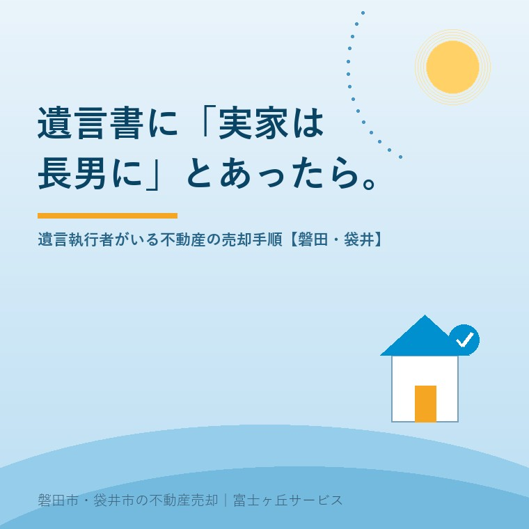

2026年8月18日｜カテゴリ：相続／遺言と売却

この記事の要点
Q. お盆に実家を片付けていたら、父の遺言書が出てきました。「実家は長男に」と書いてあり、司法書士の名前で遺言執行者の指定もあります。長男である私が売りたいのですが、勝手に進めてよいのでしょうか。
A. まず、封のある自筆の遺言書はその場で開けないでください。公正証書遺言と法務局の保管制度を使った自筆証書遺言以外は、家庭裁判所の検認が必要です。そのうえで、「実家は長男に相続させる」の一行がどちらの意味なのかを確定させます。①長男がそのまま実家を取得する特定財産承継遺言なら、売主は長男ご自身で、遺言執行者は登記など対抗要件を備える行為ができる立場です（民法1014条2項）。②「売却して代金を分けよ」という清算型の遺言なら、売却手続きを進めるのは遺言執行者で、登記もいったん相続人名義を経由してから買主へという二段構えになります。この見極めを飛ばすと、契約の相手方を間違えます。さらに令和8年6月17日に改正民法が成立し（同月24日公布・令和8年法律第45号）、押印の任意化や「保管証書遺言」の創設が決まりました。磐田市・袋井市では、介護施設の運営から不動産事業を始めた富士ヶ丘サービスのような「介護×不動産」専門の会社に相談するという選択肢があります。
お盆に実家へ帰り、仏壇の引き出しや金庫を開けたときに、遺言書が出てくることがあります。
ご家族の反応は、たいてい二つに分かれます。「これで揉めずに済む」と安心される方と、「これ、どうすればいいんだろう」と手が止まる方です。
実務でご相談が多いのは、後者です。とくに、不動産が入っている遺言書と、遺言執行者が指定されている遺言書。この二つが重なると、進め方が一気に分からなくなります。
今日は「実家は長男に」と書かれた遺言書を前提に、売却するまでに何を、どの順番でやるのかを整理します。あわせて、この6月に成立した民法改正にも触れます。内容は2026年8月18日時点で公表されているものに沿って書きます。
遺言書が出てきたら、まず種類を確認します。
| 遺言書の種類 | 家庭裁判所の検認 | 見分け方 |
|---|---|---|
| 公正証書遺言 | 不要 | 「公正証書」と印字され、公証役場の名前と公証人の署名がある。正本・謄本が手元にある |
| 自筆証書遺言（法務局の保管制度を利用） | 不要 | 法務局が発行した「保管証」がある。原本は法務局にあり、手元にあるのは控え |
| 自筆証書遺言（自宅などで保管） | 必要 | 全文が手書き。封筒に入り封印されていることが多い |
検認は、遺言の有効・無効を決める手続きではありません。相続人に対して遺言の存在と内容を知らせ、その時点の状態を記録して偽造・変造を防ぐための手続きです。
封印のある遺言書は、家庭裁判所で相続人等の立会いのもとで開封しなければなりません。気持ちは分かりますが、その場で開けないでください。
そして実務上いちばん大事なのは、検認が済まないと、不動産の登記手続きが進まないということです。法務局に出す添付書類として検認済証明書が求められるためです。売却の話は、ここが片付いてからになります。
なお、検認の申立先は遺言者の最後の住所地を管轄する家庭裁判所です。相続人全員分の戸籍を集めるところから始まるので、お盆に見つけて、動けるのは秋というくらいのペースになります。数次相続で相続人が10人になる話のように、戸籍集めそのものに時間がかかることもあります。
ここが今日の中心です。
同じ「実家は長男に」でも、売却の手順はまったく別物になります。遺言書の文言をもう一度、正確に読んでください。
「○○の土地建物を、長男○○に相続させる。」
この書き方が、いわゆる特定財産承継遺言です。相続開始と同時に、その不動産は長男のものになります。遺産分割協議は要りません。
したがって、売主は長男ご自身です。長男が単独で媒介契約を結び、売買契約を結び、決済を受けます。他の相続人の実印は要りません。
では遺言執行者は何をするのか。登記です。2019年施行の改正で、民法1014条2項により、特定財産承継遺言があった場合にも遺言執行者が対抗要件を備えるために必要な行為をすることができると明文化されました。つまり遺言執行者が相続登記を申請できます。
「○○の土地建物を売却し、その代金から一切の費用を控除した残額を、長男○○に○分の○、二男○○に○分の○の割合で分配する。」
この書き方だと、話がまるで変わります。誰かが実家をもらうのではなく、換価して分けるのが遺言の内容だからです。実務では清算型遺贈と呼ばれます。
この場合、売却を進めるのは遺言執行者です。そして登記が独特です。
第1段階 遺言者から相続人全員へ、法定相続分による相続登記を入れる
第2段階 その相続人名義から買主へ、売買による所有権移転登記を入れる
形式上は相続人の名義を一度通しますが、この登記はいずれも遺言執行者が、相続人の関与なく申請できるとされています。売買による移転登記では、登記義務者側の印鑑証明書として遺言執行者の印鑑証明書を、代理権を証する書面として遺言書を添付します。
買主側から見ると、登記簿に見慣れない名義が一度入るので、必ず質問が出ます。ここを事前に説明できるかどうかで、契約の進み方が変わります。
| ① 特定財産承継遺言 | ② 清算型の遺言 | |
|---|---|---|
| 文言 | 「相続させる」 | 「売却して代金を分配する」 |
| 売主 | 取得する相続人（長男） | 遺言執行者 |
| 媒介契約の相手 | 長男 | 遺言執行者 |
| 登記 | 長男名義へ相続登記（遺言執行者も申請できる） | 法定相続分の相続登記 → 買主へ売買の移転登記 |
| 売却代金 | 長男が受け取る | 遺言執行者が受領し、費用控除後に分配 |
| 譲渡所得の申告 | 長男が行う | 取得した相続人が持分に応じて行う |
「実家は長男に」と聞いて①だと思い込み、実は②だったというのは、実際に起きます。逆もあります。不動産会社に相談するときは、遺言書のその条項を、そのまま読み上げてください。
遺言執行者という言葉に、身構える方が多いのですが、条文を読むと役割ははっきりしています。
第1012条第1項 遺言執行者は、遺言の内容を実現するため、相続財産の管理その他遺言の執行に必要な一切の行為をする権利義務を有する。
第1012条第2項 遺贈の履行は、遺言執行者のみが行うことができる。
第1013条第1項 遺言執行者がある場合には、相続人は、相続財産の処分その他遺言の執行を妨げるべき行為をすることができない。
第1013条第2項 前項の規定に違反してした行為は、無効とする。ただし、これをもって善意の第三者に対抗することができない。
第1015条 遺言執行者がその権限内において遺言執行者であることを示してした行為は、相続人に対して直接にその効力を生ずる。
読みどころは3つです。
ひとつ目。遺言執行者は「遺言の内容を実現するため」に動きます。相続人の誰かの味方ではありません。ですから、「執行者が長男寄りだ」といった不満は、制度の建て付けとしては筋が違います。
ふたつ目。遺言執行者がいる間、相続人は勝手に処分できません。そして違反した行為は無効です。ただし善意の第三者には対抗できない——つまり事情を知らずに買った人からは取り戻せません。だから登記を急ぐという話に、あとでつながります。
みっつ目。遺言執行者は、就職を承諾したら遅滞なく任務を開始し、遺言の内容を相続人に通知する義務があります（第1007条第2項）。「執行者がいるのに何も連絡が来ない」というご相談がありますが、通知は義務です。催促してよい場面です。
なお、遺言書に執行者の指定がない場合や、指定された人が亡くなっている場合は、利害関係人の請求により家庭裁判所が遺言執行者を選任できます（第1010条）。清算型の遺言なのに執行者がいない、というときは、選任の申立てから始めることになります。
2019年7月1日から施行されている条文に、民法第899条の2があります。
相続による権利の承継は、遺産の分割によるものかどうかにかかわらず、次条及び第901条の規定により算定した相続分を超える部分については、登記、登録その他の対抗要件を備えなければ、第三者に対抗することができない。
これがどう効くか、具体例で書きます。
相続人が長男と二男の二人。遺言で実家は長男に。ところが登記をしないまま数か月が過ぎた。その間に、二男の債権者が、二男の法定相続分（2分の1）を差し押さえた。
このとき、登記をしていない長男は、その2分の1について債権者に「これは私のものだ」と言えません。遺言があっても、です。
遺言書があるから安心、ではありません。登記まで済ませて、はじめて安心です。
さらに、2024年4月1日から相続登記は義務になっています。不動産を取得したことを知った日から3年以内に申請しなければならず、正当な理由なく怠れば過料の対象です。遺言で取得した場合も同じです。期限の数え方は相続登記の期限にまとめました。
ケース①（特定財産承継遺言・売主は長男）を前提に、時系列で並べます。
| 順番 | やること | だれが | 目安 |
|---|---|---|---|
| 1 | 遺言書の種類を確認。自筆で保管制度未利用なら検認の申立て | 相続人 | 戸籍収集を含め1〜3か月 |
| 2 | 遺言執行者から遺言の内容の通知を受ける | 遺言執行者 | 就職承諾後、遅滞なく |
| 3 | 相続登記（長男名義へ） | 長男または遺言執行者 | 書類が揃えば2〜4週間 |
| 4 | 現況調査・境界・道路・農地の確認、査定 | 不動産会社 | 1〜2週間（3と並行可） |
| 5 | 媒介契約（長男が締結） | 長男 | 登記完了後が安全 |
| 6 | 売出し・内覧・売買契約 | 長男 | 地域・価格による |
| 7 | 決済・引渡し・所有権移転登記 | 長男 | 契約から1〜2か月 |
| 8 | 譲渡所得の確定申告 | 長男 | 売却した年の翌年2月16日〜3月15日 |
4番を3番と並行して進めるのが実務のコツです。登記を待つ間に、境界標の有無、接道、農地の有無、残置物の量を確認しておけば、登記が終わった翌週から売り出せます。
相続した空き家を売る場合、相続空き家の3,000万円特別控除が使える可能性もあります。この特例には期限があるので、早めの確認が要ります（3,000万円控除を8月から逆算する）。
遺言があっても、他の相続人には遺留分があります。
2019年7月1日施行の改正で、遺留分の請求は金銭債権になりました。つまり「不動産の持分をよこせ」ではなく「相当額のお金を払え」という請求です（民法第1046条）。
これは不動産にとっては良い改正です。請求されても、実家が共有になるわけではないからです。売却の障害にはなりません。共有名義の厄介さは共有名義の実家に書きました。
ただし、期限があります（第1048条）。
実務での付き合い方は単純です。他の相続人から遺留分の話が出ているなら、売却代金から精算する前提で、金額の合意を先に文書にしておく。決済でお金が動いたあとに話し合うのは、いちばん揉めます。
この夏の新しい話題に触れます。
令和8年6月17日、「民法等の一部を改正する法律」が成立し、同月24日に公布されました（令和8年法律第45号）。成年後見制度の見直しと、遺言制度の見直しが柱です。
法務省が公表している内容から、不動産の相続に関わる点を挙げます。
| 改正の内容 | 施行時期 |
|---|---|
| 押印の任意化等（自筆証書遺言の要件緩和、危急時遺言の要件緩和を含む） | 公布日から1年以内 |
| 成年後見制度の見直し（後見・保佐を廃止し補助に一元化、必要な範囲での利用） | 公布日から2年6か月以内 |
| 「保管証書遺言」の創設（電子データ等で作成し、法務局において保管する新しい方式） | 公布日から3年以内 |
ご相談を受ける立場から、要点を3つに絞ります。
ひとつ。今ある遺言書は、これまでどおり有効です。「改正されたから書き直さないといけないのか」というご質問をいただきますが、そういうものではありません。今日見つけた遺言書は、今日の民法で読みます。
ふたつ。今から書くなら、現行の方式で書いてください。保管証書遺言は公布から3年以内の施行ですから、まだ使えません。「新しい制度を待つ」という判断は、ご本人のご年齢や体調によっては、いちばん危ない選択になります。
みっつ。成年後見の見直しは、実家の売却に直結する話です。認知症のご本人名義の不動産は、現在は成年後見人を付けなければ売れません。制度が「必要な範囲での利用」へ変わっていく方向は、実家じまいの現場にとって大きな変化です。ただし施行はまだ先で、今日ご本人の判断能力が落ちている実家は、今日の制度で対応するしかありません（認知症で実家が凍る）。
制度が変わる前に、動けるうちに整えておく。これが、この改正から読み取るべき実務的な結論だと思っています。
この地域ならではの事情を3つ挙げます。
ひとつ目。遺言書に書かれていない不動産が、たいてい出てきます。磐田市・袋井市の実家には、畑・田・山林・墓地・私道の持分が付いていることが珍しくありません。「実家は長男に」とだけ書かれた遺言では、これらが漏れます。漏れた分は、結局、相続人全員での遺産分割協議が必要になります（田畑・山林の相続）。
ふたつ目。名義がそもそも祖父のままのことがあります。お父様の遺言があっても、建物や畑が祖父名義なら、そこから先に片付けなければ登記が入りません。お盆に見つけた遺言書が、実は入口に過ぎなかったというケースです。
みっつ目。農地は遺言でも自由に動きません。相続による取得は農地法の許可が不要（届出は必要）ですが、売却となれば話は別です。市街化調整区域が広いこの地域では、ここが売却スケジュールを決めます（市街化調整区域の実家は売れるのか）。
遺言書は「もう決まっている」という安心をくれますが、決まっているのは分け方だけです。売れるかどうか、いつ売れるかは、現地と役所を回らないと分かりません。
当社は、磐田市見付で介護施設を運営するところから不動産の仕事を始めました。ご相談の入口は、たいてい「親が施設に入った」「親を看取った」です。
遺言書が出てきたご相談で、まずお願いしているのは「その条項を、そのまま読ませてください」ということです。要約ではなく、原文です。
「相続させる」なのか、「売却して分配する」なのか。ここが決まらないと、媒介契約の相手方すら決められません。そして、執行者の司法書士・弁護士の先生と、こちらから直接やり取りをします。ご家族が伝書鳩になると、必ずどこかで話が食い違うからです。
私たちが目指しているのは、高く売ることだけではなく、「家族が困らない売却」です。遺言があってもなくても、揉めるのはいつも「順番」と「情報の非対称」です。ここを平らにするのが、私たちの仕事だと思っています。
価格の話の前に事実を整理する道具として、ふじがおか実家カルテを用意しています。遺言書の写しがなくても、固定資産税の通知書1枚あれば始められます。
遺言書は、亡くなった方が残した最後の指示書です。読み方を間違えなければ、ご家族の手間を確実に減らしてくれます。
まずは、その一行を正確に読むところから。「相続させる」か、「売却して分ける」か。そこが決まれば、あとは順番どおりです。
ふじがおか実家カルテ｜遺言書のある実家のご相談も承ります
その一行が、どちらの意味かを一緒に読みます。
住所と遺言書の該当条項をもとに、売主が誰になるか、登記の順番、検認の要否、遺言に漏れている不動産の有無、農地・接道・境界の確認順を整理し、次に何をすべきかを1枚にしてお出しします。作成料0円・入力約1分。申込みだけで売却依頼にはなりません。
本記事は2026年8月18日時点で公表されている法令・制度に基づく一般的な解説であり、個別の遺言書の解釈や有効性についての判断を示すものではありません。遺言書の文言がどちらの類型にあたるかは、遺言全体の記載から判断されます。検認の申立て、遺言執行者の選任、相続登記の手続きは司法書士または弁護士へ、遺留分をめぐる争いは弁護士へ、譲渡所得および相続税の課税関係は税理士へ、農地の売買は各市の農業委員会へ、境界の確定は土地家屋調査士へご確認ください。令和8年法律第45号の施行日は本記事作成時点で未確定の部分があります。最新の情報は法務省のページでご確認ください。個別のご相談は当社までどうぞ。
磐田市・袋井市の実家じまい・相続空き家相談
固定資産税通知書だけでも相談できます
住所があいまいでも、通知書や写真から名義・道路・農地・残置物の確認順を整理します。カルテ申込またはLINEで状況を送ってください。
富士ヶ丘サービス株式会社／静岡県磐田市見付5789番地1／TEL:0538-31-3308／静岡県知事 (2) 第14083号／代表取締役・宅地建物取引士 大石 浩之